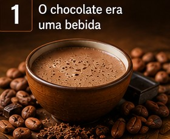
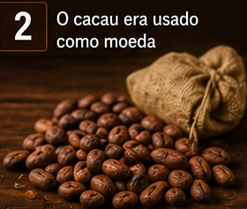
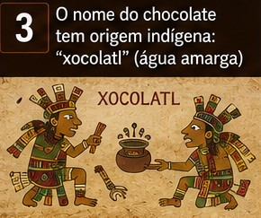

Curiosidades.
Você Sabia?
Curiosidades sobre o chocolate.
- O chocolate surgiu na América Central e começou a ser utilizado há mais de 3 mil anos pelos povos indígenas.
Os maias consumiam chocolate como bebida, misturando cacau, água e especiarias. A bebida era amarga e utilizada em cerimônias importantes.
- Os astecas usavam sementes de cacau como moeda, podendo comprar diversos produtos com elas.
O cacau era considerado sagrado pelos maias e astecas, que acreditavam que ele era um presente dos deuses.
- O chocolate chegou à Europa no século XVI, levado pelos espanhóis após o contato com os povos da América.
O chocolate que conhecemos hoje é diferente do original, pois os europeus adicionaram açúcar e leite à receita.
- O nome científico do cacaueiro é Theobroma cacao, que significa "alimento dos deuses".
O chocolate ao leite foi criado em 1875, tornando-se uma das variedades mais populares do mundo.
- O Brasil é um dos produtores de cacau, com destaque para os estados da Bahia e do Pará.
O chocolate é um dos alimentos mais consumidos do planeta, presente em doces, bebidas, bolos e sobremesas de diversos países.


